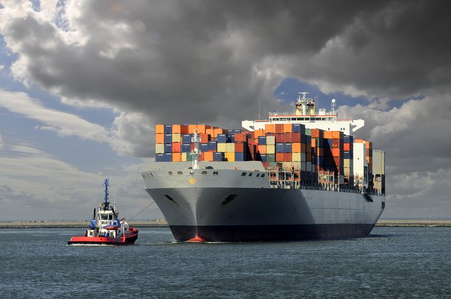
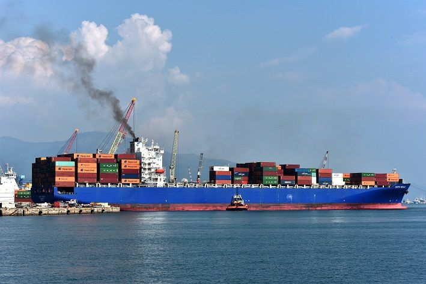
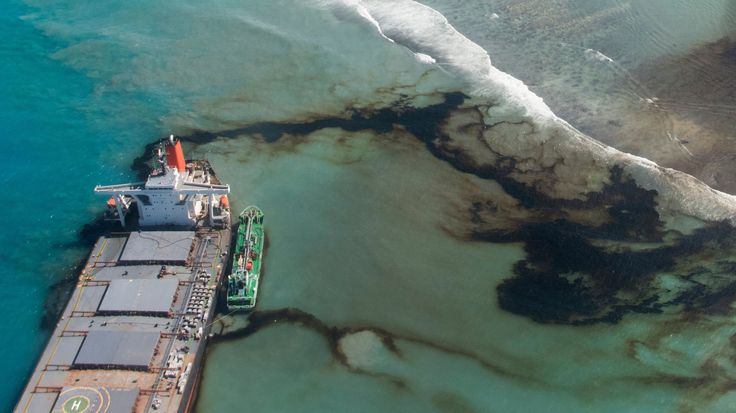
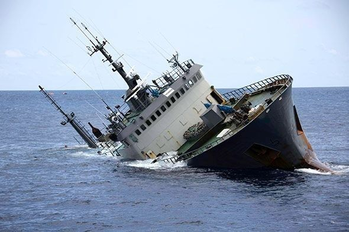

Water Transport
Water transport has both positive and negative impacts on the environment and economy. While it is generally more environmentally friendly than other modes of transportation and can be cost-effective, it can also contribute to pollution, disrupt ecosystems, and pose risks to safety and security.
Impact
While water transportation is generally considered more environmentally friendly than some other modes of transport, it still have challenges that need to be considered. These include:
Noise Pollution
Underwater noise from ships can disrupt marine life, particularly whales and dolphins, and impact their ability to communicate and hunt.
Greenhouse Gas Emissions
Marine transportation contributes to greenhouse gas emissions, though efforts are underway to reduce them.
Anti-fouling Paint
Historical use of anti-fouling paints on ships has released toxic chemicals into the water, harming marine organisms.
Safety and Security
Water transport can pose risks to safety and security, including ship accidents, piracy, and terrorism.
Reliability
While water transport can be reliable, weather conditions and other factors can affect its efficiency and timeliness.